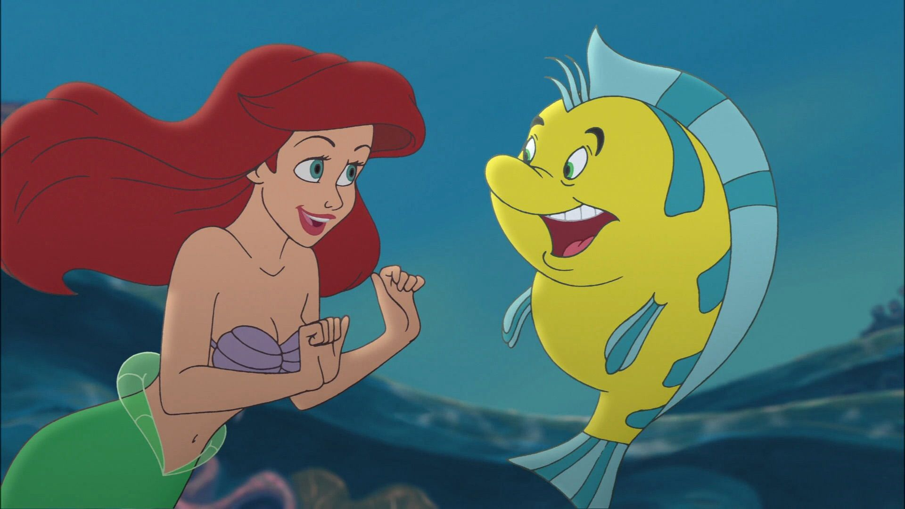
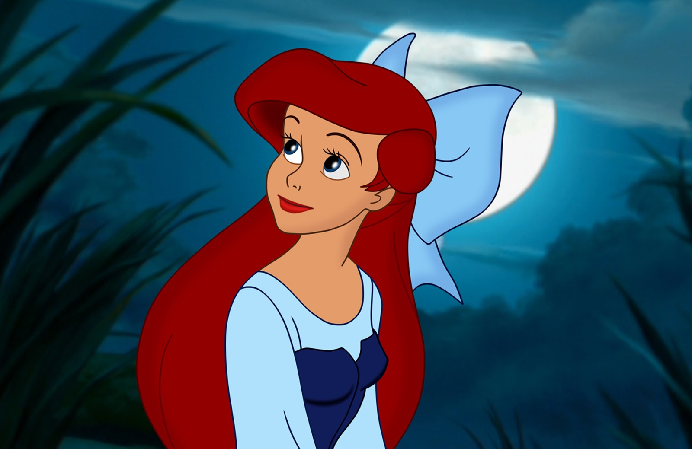

This is a vintage fairy tale, and may contain violence. We would encourage parents to read beforehand if your child is sensitive to such themes.
Far out in the ocean, where the water is as blue as the prettiest cornflower and as clear as crystal, it is very, very deep; so deep, indeed, that no cable could sound it, and many church steeples, piled one upon another, would not reach from the ground beneath to the surface of the water above. There dwell the Sea King and his subjects. We must not imagine that there is nothing at the bottom of the sea but bare yellow sand. No, indeed, for on this sand grow the strangest flowers and plants, the leaves and stems of which are so pliant that the slightest agitation of the water causes them to stir as if they had life. Fishes, both large and small, glide between the branches as birds fly among the trees here upon land. In the deepest spot of all stands the castle of the Sea King. Its walls are built of coral, and the long Gothic windows are of the clearest amber. The roof is formed of shells that open and close as the water flows over them. Their appearance is very beautiful, for in each lies a glittering pearl which would be fit for the diadem of a queen.
The Sea King had been a widower for many years, and his aged mother kept house for him. She was a very sensible woman, but exceedingly proud of her high birth, and on that account wore twelve oysters on her tail, while others of high rank were only allowed to wear six. She was, however, deserving of very great praise, especially for her care of the little sea princesses, her six granddaughters. They were beautiful children, but the youngest was the prettiest of them all. Her skin was as clear and delicate as a rose leaf, and her eyes as blue as the deepest sea; but, like all the others, she had no feet and her body ended in a fish’s tail.
We must not imagine that there is nothing at the bottom of the sea but bare yellow sand. No, indeed, for on this sand grow the strangest flowers and plants, the leaves and stems of which are so pliant that the slightest agitation of the water causes them to stir as if they had life. Fishes, both large and small, glide between the branches as birds fly among the trees here upon land. In the deepest spot of all stands the castle of the Sea King. Its walls are built of coral, and the long Gothic windows are of the clearest amber. The roof is formed of shells that open and close as the water flows over them. Their appearance is very beautiful, for in each lies a glittering pearl which would be fit for the diadem of a queen.
The Sea King had been a widower for many years, and All day long they played in the great halls of the castle or among the living flowers that grew out of the walls. The large amber windows were open, and the fish swam in, just as the swallows fly into our houses when we open the windows; only the fishes swam up to the princesses, ate out of their hands, and allowed themselves to be stroked.Outside the castle there was a beautiful garden, in which grew bright-red and dark-blue flowers, and blossoms like flames of fire; the fruit glittered like gold, and the leaves and stems waved to and fro continually. The earth itself was the finest sand, but blue as the flame of burning sulphur. Over everything lay a peculiar blue radiance, as if the blue sky were everywhere, above and below, instead of the dark depths of the sea. In calm weather the sun could be seen, looking like a reddish-purple flower with light streaming from the calyx. Each of the young princesses had a little plot of ground in the garden, where she might dig and plant as she pleased. One arranged her flower bed in the form of a whale; another preferred to make hers like the figure of a little mermaid; while the youngest child made hers round, like the sun, and in it grew flowers as red as his rays at sunset.
She was a strange child, quiet and thoughtful. While her sisters showed delight at the wonderful things which they obtained from the wrecks of vessels, she cared only for her pretty flowers, red like the sun, and a beautiful marble statue. It was the representation of a handsome boy, carved out of pure white stone, which had fallen to the bottom of the sea from a wreck.
She planted by the statue a rose-colored weeping willow. It grew rapidly and soon hung its fresh branches over the statue, almost down to the blue sands. The shadows had the color of violet and waved to and fro like the branches, so that it seemed as if the crown of the tree and the root were at play, trying to kiss each other.
Nothing gave her so much pleasure as to hear about the world above the sea. She made her old grandmother tell her all she knew of the ships and of the towns, the people and the animals. To her it seemed most wonderful and beautiful to hear that the flowers of the land had fragrance, while those below the sea had none; that the trees of the forest were green; and that the fishes among the trees could sing so sweetly that it was a pleasure to listen to them. Her grandmother called the birds fishes, or the little mermaid would not have understood what was meant, for she had never seen birds. “When you have reached your fifteenth year,” said the grandmother, “you will have permission to rise up out of the sea and sit on the rocks in the moonlight, while the great ships go sailing by. Then you will see both forests and towns.” In the following year, one of the sisters would be fifteen, but as each was a year younger than the other, the youngest would have to wait five years before her turn came to rise up from the bottom of the ocean to see the earth as we do. However, each promised to tell the others what she saw on her first visit and what she thought was most beautiful. Their grandmother could not tell them enough—there were so many things about which they wanted to know. None of them longed so much for her turn to come as the youngest—she who had the longest time to wait and who was so quiet and thoughtful. Many nights she stood by the open window, looking up through the dark blue water and watching the fish as they splashed about with their fins and tails. She could see the moon and stars shining faintly, but through the water they looked larger than they do to our eyes. When something like a black cloud passed between her and them, she knew that it was either a whale swimming over her head, or a ship full of human beings who never imagined that a pretty little mermaid was standing beneath them, holding out her white hands towards the keel of their ship.